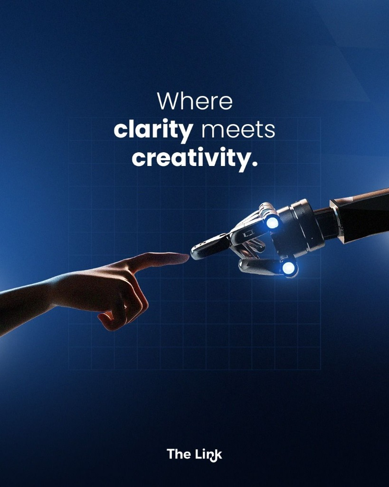
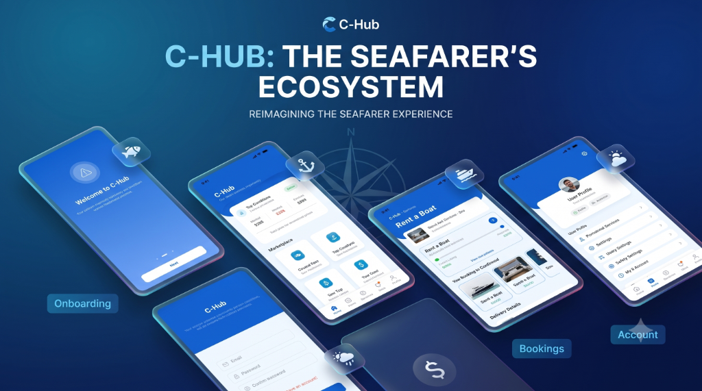
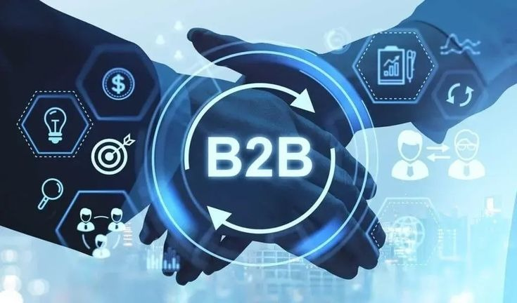
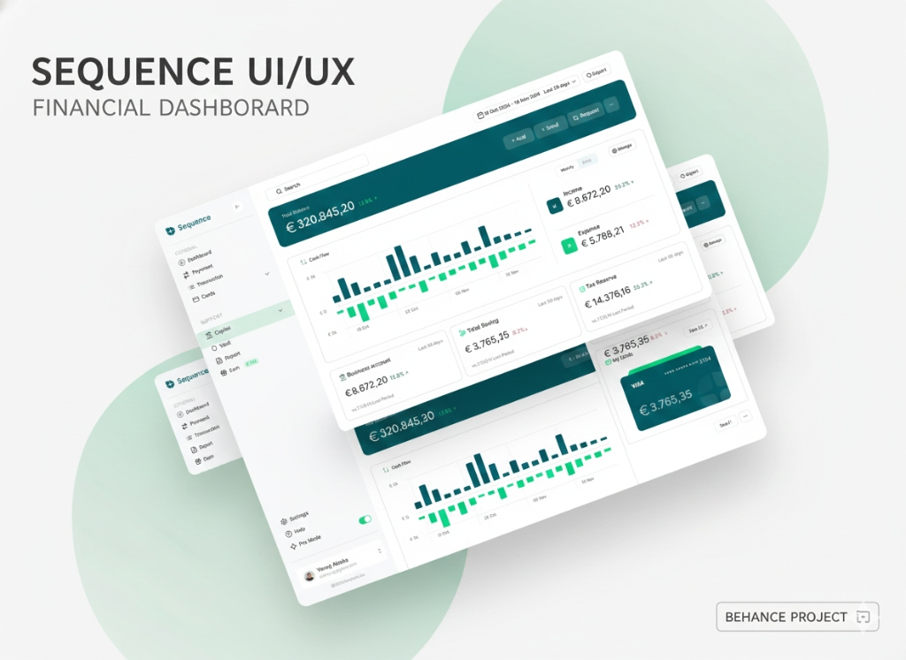
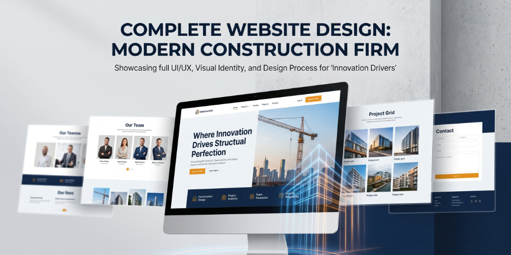

MOHAMED SAMEER CREATIVE TECHNOLOGIST
Bridging the gap between premium UI/UX design and high-performance full-stack engineering. Crafting cinematic user experiences that balance aesthetics, accessibility, and clean architecture.
The Story of Sameer

Creative UI/UX Designer & Capable Full-Stack Engineer
I am a motivated, detail-oriented designer and developer currently pursuing my **MCA** (Master of Computer Applications). I thrive at the intersection of aesthetic layout engineering and robust software development.
With hands-on experience designing user-centric flows at **Ideassion Technology Solution** and constructing complete B2B applications at **OMPOI**, I specialize in transforming raw user and business requirements into seamless, engaging digital products. Whether conducting user research in Figma or building optimized REST APIs using FastAPI, PostgreSQL, and React, my focus remains constant: **delivering absolute pixel-perfection and high performance.**
Technical Skillset
User Research & Analysis
Empathy mapping, user interviews, persona mapping, and usability testing.
Wireframing & Prototyping
Creating low/high-fidelity wireframes, interactive flows, and micro-interactions in Figma.
Responsive Interfaces
Designing adaptable UI systems scaling fluidly across mobile, tablet, and desktop screens.
Design Systems
Building robust components, style tokens, and accessible variants for cross-functional Hand-off.
React.js & Next.js
Building dynamic single-page applications and Server-Side Rendered (SSR) B2B web portals.
Modern JavaScript
ES6+, asynchronous flow control, API integration, and clean modular structures.
HTML5 & Vanilla CSS3
Semantic structuring, CSS Grid, Flexbox, custom CSS animations, and variable-based design systems.
Component Architecture
Creating decoupled, reusable front-end component configurations with state management.
Python & FastAPI
Constructing modular, asynchronous REST APIs with type-validation and auto-generated OpenAPI docs.
PostgreSQL & Relational SQL
Schema design, foreign key relationships, complex joins, and transactional database integrity.
Oracle PL/SQL Development
Writing stored procedures, optimization routines, and triggers to handle patient/enterprise data.
RBAC Security Workflows
Implementing Role-Based Access Control and authentication for multi-stakeholder dashboards.
Git & GitHub Version Control
Branch management, team pull requests, reviews, and code merging pipelines.
Alembic Migration Tool
Handling schema progression and automated database revision rollouts in Python environments.
Networking Essentials
Basic diagnostic troubleshooting, TCP/IP structures, DNS setups, and client-server connectivity.
Editing & Content Tools
Photoshop, Premiere Pro, vector manipulation, and digital asset preparation.
Professional Journey
Full Stack Developer
OMPOI
Engineered a multi-stakeholder B2B marketplace platform using FastAPI, Next.js, React, TypeScript, and PostgreSQL. Supported complex role divisions including Buyers, Sellers, Agents, and Administrators.
- Implemented secure Role-Based Access Control (RBAC) workflows across web interfaces.
- Managed incremental database structural modifications utilizing Alembic migration setups.
- Collaborated on AI feature integrations, including automated product details rendering and initial price prediction.
UI/UX Designer Intern
Ideassion Technology Solution
Acquired deep, practical knowledge of core layout principles to map intuitive and highly interactive mobile and web interfaces.
- Developed clean wireframe pathways, high-fidelity prototypes, and cohesive system layouts in Figma.
- Identified usability problems and redesigned screen logic to significantly reduce user friction.
- Coordinated directly with design leads and engineering members to translate mockups into code-ready assets.
Case Studies

C-Hub: Maritime Ecosystem
End-to-end mobile design featuring streamlined onboarding, multi-service bookings, marketplace integrations, and live weather tracking.

B2B Commodity Marketplace
Multi-stakeholder agricultural trading system built with Next.js, React, FastAPI, and PostgreSQL with modular microservice readiness.

Sequence Financial Dashboard
Premium banking portal design focusing on real-time transaction clarity, dense financial charts, and clean asset visualizations.
OMPOI B2B Escrow & Marketplace
B2B platform featuring role-based dashboards, database migration flows via Alembic, and integrated price prediction API models.

ITS Construction Corporate Site
Modern design system established for an infrastructure firm, highlighting past projects, industry insights, and active client portals.
Integrated Hospital Solution
Optimized database schema, custom stored procedures, and triggers ensuring real-time patient record communication.
Certifications
UI/UX Internship Certificate
Ideassion Technology Solution
Completed three months of rigorous hands-on layout, system mockup design, and UI handoff processes on real B2B client applications.
MasterClass in UI/UX Design
Novi Tech
Specialized course focusing on User Experience strategies, detailed wireframing sequences, information mapping, and mobile app design rules.
Training in UI/UX Design
Futurofocus
Foundational certification covering typography parameters, layout geometry, grid guides, and building clean interfaces in Figma.
Education
Master of Computer Applications (MCA)
MEASI Institute of Information Technology
CGPA: 8.6 / 10.0Chennai, Tamil Nadu
Bachelor of Science (B.Sc) in Computer Science
PET Arts & Science College
CGPA: 8.4 / 10.0Tirunelveli, Tamil Nadu
Interests & Focus
Active Technological Engagements
Beyond design and coding, I dedicate my focus to learning, creating, and automating workflows. Here is what sparks my interest:
Get in Touch
Let's build something exceptional together
Whether you represent an agency searching for a UI/UX design intern, a tech company needing a capable full-stack developer who understands layout, or a client looking to build a new interface from scratch, my inbox is always open.
Chennai, Tamil Nadu, India